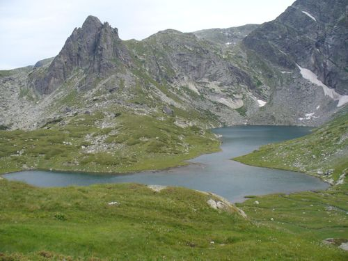

Lake Bliznaka is the fourth of the Seven Rila Lakes . It is the largest in area. It is third in depth after the Eye and the Kidney .
It is located at 2243 meters above sea level, north of Damga peak , at the western foot of Haramiyata peak . It consists of two parts, and between them there is a narrow shallow channel. From this feature comes its name, as well as the previous name in Turkish - Chifte Gyol. [1] [2]
The southern part of the lake is deeper, surrounded by steep rock walls, under which large snowdrifts remain until late summer; its appearance is alpine. In this part flows the waters of the first lake, the uppermost - the Tear . The northern part of Gemini is shallower, with sloping banks along which juniper grows. The waters of the second lake (the Eye) and the third lake (the Kidney) flow into it. The outflow of Gemini flows into the fifth lake (Shamrock). [2]
The area of the catchment area is 2.10 sq. Km. The surface area of the water surface is 91 decares . The water volume of the lake is 590 thousand m 3 and the maximum depth is 27.5 meters.